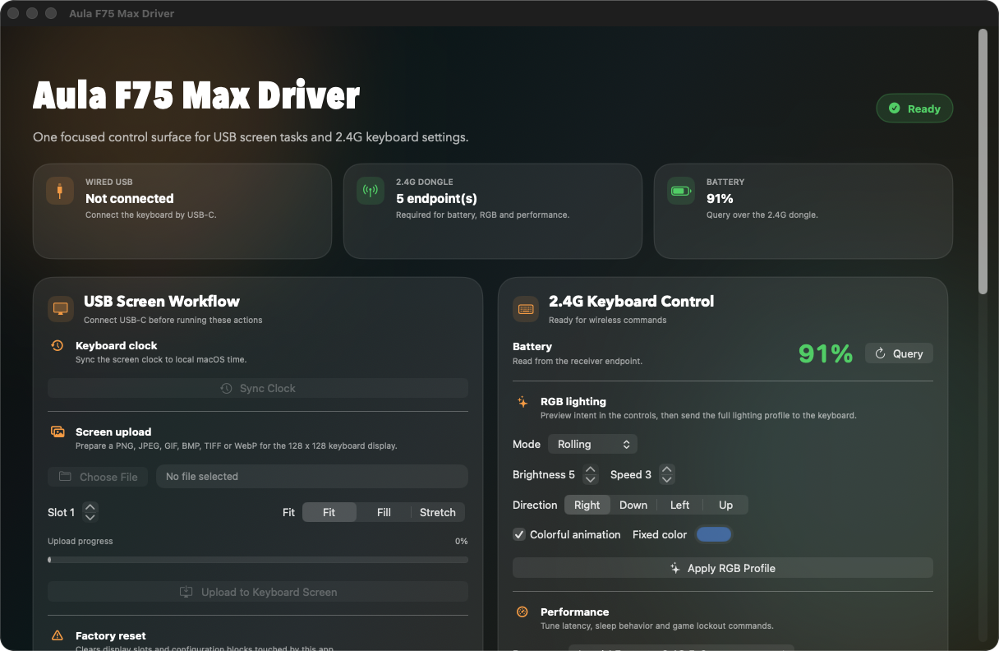
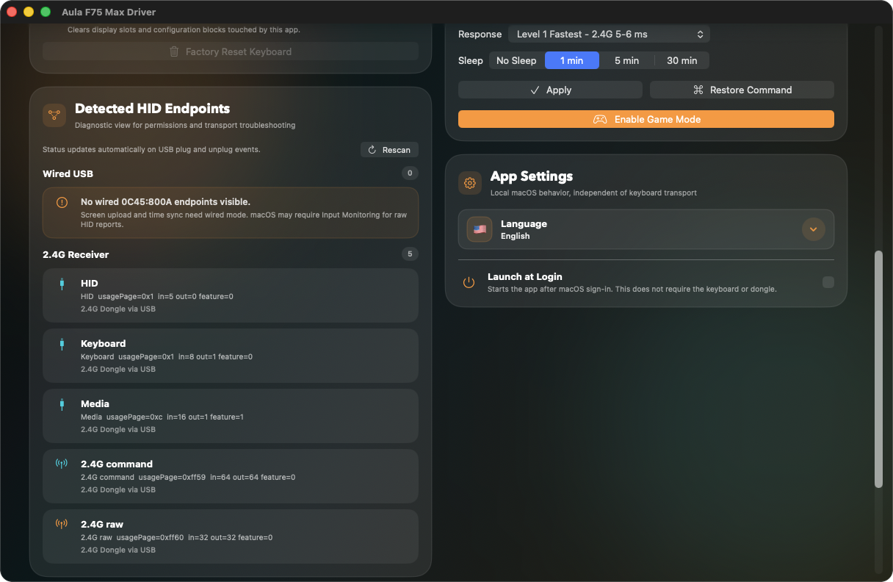

Upload images and GIFs to the keyboard display with fit, fill, and stretch modes.
Native macOS utility
Control Aula F75 Max without extra drivers.
Configure the keyboard display, RGB lighting, battery status, response level, and Game Mode from one focused app for Apple Silicon Macs.
macOS 14+
Apple Silicon
USB-C + 2.4G
Aula F75 Max Driver

Battery
91%
Control battery, RGB lighting, response, sleep, and Game Mode through the receiver.
Direct communication through macOS HID APIs without kernel extensions or libusb.
What's inside
Tools built specifically for the F75 Max.
The app separates wired operations from 2.4G settings, so it is clear which connection mode each task needs.
Keyboard display
Upload PNG, JPEG, GIF, BMP, TIFF, and WebP files to the 128 x 128 display. Animated GIFs keep their frame delays.
RGB and performance
Configure lighting mode, brightness, speed, direction, fixed color, response level, and sleep timeout.
Battery and alerts
Read battery percentage through the 2.4G receiver and get a local notification when it drops below 20%.
HID diagnostics
The endpoints panel shows transport, usage pages, and report sizes for quick connection and macOS permission checks.
Workflow
Two connections, two areas of responsibility.
USB-C is used for display tasks and clock sync. The 2.4G receiver is used for battery, RGB, response, sleep, and Game Mode.
- Sync the keyboard clock to local macOS time.
- Factory reset for display slots and configuration blocks used by this app.
- Launch at Login and interface language selection.
- Localizations: English, Russian, Spanish, Uzbek, Kazakh, Portuguese, Simplified Chinese.

Install
Download the DMG or build locally.
Ready-made build
Open the latest GitHub Release, download the DMG, and move the app to Applications.
Open releases/latestBuild from source
Requires macOS 14+, an Apple Silicon Mac, and Xcode Command Line Tools.
make all
open "build/Aula F75 Max Driver.app"macOS permissions
If HID commands do not run, grant Input Monitoring permission to the app and restart it.
System Settings
Privacy & Security
Input MonitoringOpen source